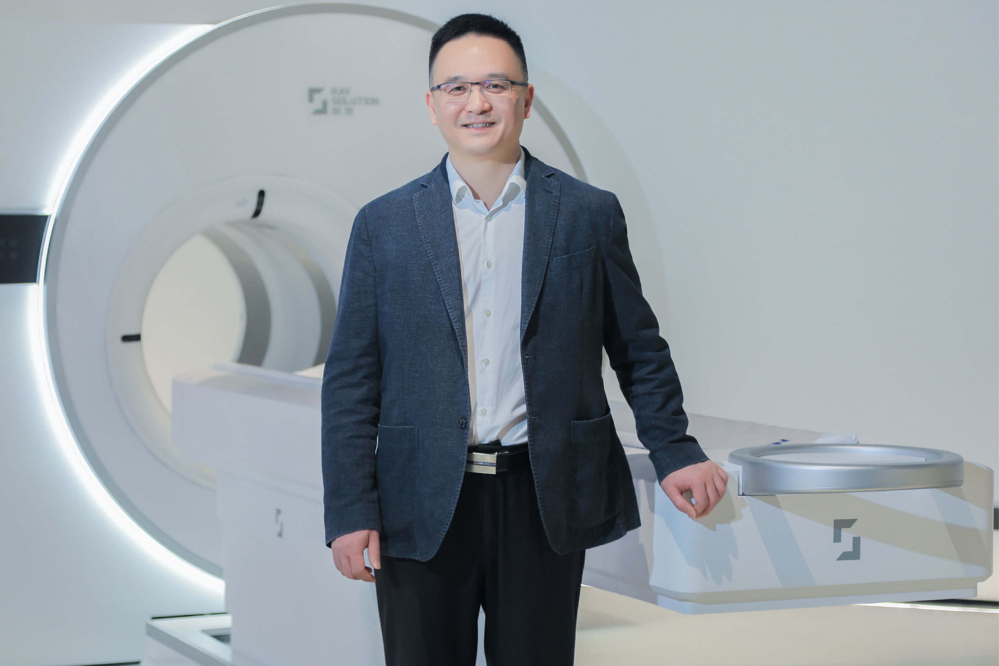

Director's Message

In support of high-end medical equipment innovation and Healthy China 2030, our development path brings together three mutually reinforcing priorities: advancing key technologies through original research, connecting discoveries to application through systems engineering, and cultivating interdisciplinary talent through open collaboration. Digital nuclear medicine, artificial intelligence for medical imaging, and precision radiation therapy are both long-term research directions and important links among national needs, clinical challenges, and the global scientific frontier.
Within one year, we executed 11 targeted technology transitions, transferring breakthrough technologies directly into clinical systems or to industry partners for production. Among them is a wearable helmet PET system that costs a fraction of conventional full-body scanners and can be deployed and calibrated at clinical sites in under two hours, expanding access to high-precision brain molecular imaging to grassroots hospitals and research institutions. Supporting multi-center clinical research networks across the country, we established a unified quantitative imaging analysis platform that has processed tens of thousands of patient scans to accelerate early cancer detection and treatment response assessment. Our world-class digital detector technology enabled real-time proton beam range verification for precision radiotherapy, and to unify research collaboration across institutions, we developed a secure, cross-domain medical data sharing architecture.
To bolster domestic technological resilience, we fabricated fully self-developed silicon photomultiplier arrays that accelerate nationwide research in nuclear detection science, and delivered integrated digital pulse processing electronics to enable next-generation compact PET systems. We also achieved the first domestic mass-production of high-performance scintillator modules — a significant step toward reducing dependence on foreign supply chains for core imaging components.
Our impact is made possible by our exceptional research community. Team members earned seven provincial and national science and technology awards for their breakthrough technologies, and inspired nearly 800 students through academic programs and STEM outreach initiatives, including joint collaborations with leading medical universities. Clinical fellows and physician-scientists embedded within our teams bridge the gap between frontline clinical needs and targeted technology solutions.
Looking ahead, we will build on more than two decades of all-digital PET innovation while maintaining a long-term perspective, interdisciplinary integration, and responsible innovation. We will continue to build an open ecosystem with clinical, industry, and academic partners in China and abroad, helping advanced imaging technologies serve research and care more quickly and reliably while creating new scientific capabilities through the pursuit of real health challenges.
Sincerely,
Qingguo Xie
Director
Mission:
Technology for National Demand
We bring together some of the nation’s top technical and clinical talent to advance digital PET system and core imaging technology development for precision medicine and translational research demands. Focused on frontier medical imaging innovation aligned with national healthcare strategies, we conduct specialized R&D in partnership with clinical hospitals, medical research institutes, biomedical funding authorities, and public health agencies nationwide.
Core competencies
- Multi-Voltage Threshold Method
- scintillation crystals
- ultra-weak light detection chips
- modular particle detectors
- end-to-end software platforms
- all-digital PET scientific instruments
Core Value
- Passion
- Ambition
- Courage
- Responsibility
Vision:
To be the nation’s premier laboratory advancing transformative digital technologies and imaging system prototypes for precision medicine and translational biomedical research.
Values:
How we approach our work
- Integrity, excellence, and innovation
How we interact with each other
- Belonging, respect, and service
Talent Development Philosophy
PETLab is committed to establishing a structured cultivation system with rigorous academic requirements and inclusive selection mechanisms. Through our robust platform resources, we empower every student with potential, creativity, and drive to discover their unique position and stage for growth.
Here, you will find
- Newcomer anxiety transforms into systematic support: Our standardized orientation program features meticulously designed modular tutorials and hands-on sessions, enabling seamless transition from theoretical learning to research practice. This approach helps you rapidly build professional foundations and significantly accelerate your development.
- Earning capabilities evolve through multidisciplinary cultivation: Spanning science, engineering, and medical disciplines, you'll learn to integrate knowledge across fields and drive innovation in this interdisciplinary environment.
- World-class research platforms propel your growth: We pioneer groundbreaking achievements in digital PET technology, having developed multiple world-first innovations including digital PET 1.0, and are now advancing cutting-edge research on digital PET 2.0 systems like proton therapy PET. Our cutting-edge facilities, including major scientific installations with cyclotrons, provide unparalleled support for pushing innovation boundaries.
- Global perspectives guide your journey: Our international academic collaboration network offers opportunities worldwide for conference participation, academic exchanges, and horizon expansion. Even undergraduate and master's students regularly win gold awards in various international academic competitions and invention contests.
- Practical capabilities are forged through real-world experience: Leveraging our unique industry-academia-research integration, we maintain end-to-end practice bases covering principle invention, key materials, core components, medical devices, and application research. Your innovative idea can progress from lab conception to industrial production and clinical validation - all within a single day.
- Leadership potential awakens through meaningful engagement: Through our deep industry-academia integration projects, you'll participate as core team members in complete innovation chains from conception and design to execution and implementation. Confronting complex real-world challenges, you'll systematically develop project management capabilities, master team collaboration skills, and cultivate value-driven leadership through resource integration and goal achievement.
Here, you'll continuously embrace and overcome challenges,
discovering the boundaries of your potential,
evolving into future research leaders and industry pioneers,
becoming the most exceptional version of yourself!